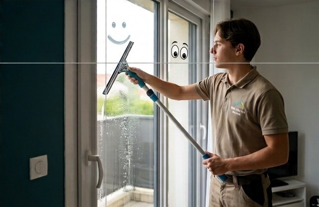

Fiabilité
Elouan arrive à l'heure convenue et fait ce qui a été prévu. Vous pouvez lui confier vos clés sereinement.
Depuis 2021, Elouan entretient les maisons et les jardins de ses clients. Voici pourquoi il a choisi de tout faire lui-même.

Elouan a lancé son entreprise en 2021, en auto-entrepreneur. Au départ, il y a un constat simple : pour avoir une maison propre et un jardin entretenu, beaucoup de familles devaient appeler deux ou trois prestataires et caler autant de rendez-vous.
Il a donc choisi d'être multi-tâches. En un seul passage, il fait le ménage, nettoie les vitres, taille la haie ou monte le meuble resté dans son carton. Vous avez un seul interlocuteur, un seul créneau, et plusieurs tâches réglées.
« Je m'occupe de tout, vous profitez. »Elouan
Elouan arrive à l'heure convenue et fait ce qui a été prévu. Vous pouvez lui confier vos clés sereinement.
Ménage, vitres, jardin, petites réparations : une seule personne pour toute la maison, sans multiplier les rendez-vous.
Il intervient à 20 km autour de chez lui. Vous savez qui vient chez vous : c'est toujours Elouan.
Les plinthes, le dessous du canapé, les bords de la pelouse : Elouan ne s'arrête pas à ce qui se voit au premier coup d'œil.
Elouan crée son entreprise en auto-entrepreneur, avec le ménage et le nettoyage.
Le jardinage rejoint les services : tonte, taille de haies, entretien des massifs.
Elouan accueille son 100e client.
Ménage, vitres, jardin ou petits travaux : un seul passage d'Elouan, et la maison est réglée. Votre devis est prêt en 2 minutes.
Faire mon devis 06 00 00 00 00 50 % de crédit d'impôt immédiat : vous ne payez que la moitié.